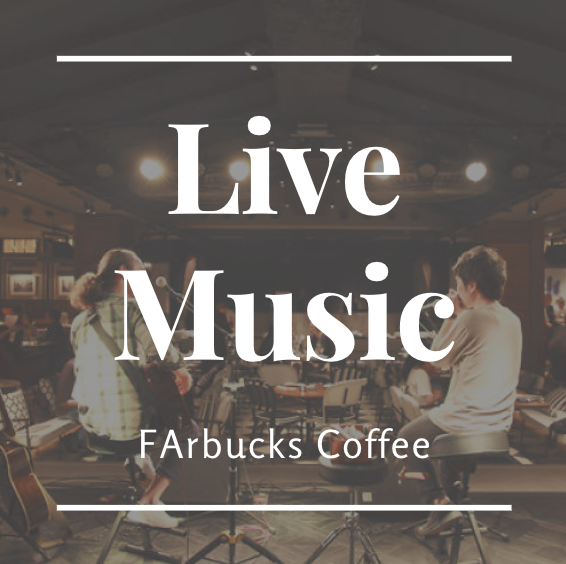

This Week's Events
Live Music
Live music event at FArbucks, you are not only served with delicious dishes from FArbucks coffee, but also accompanied by music that keeps the atmosphere alive.
17 June 2022

Coffee Talks
Who's waiting for coffee talks?
Visit the FArbucks store in Indonesia and ask the barista for a coffee chat on how to make a great
coffee at home. You can also ask for pro tips on how to actually taste coffee.
18 June 2022

Doodle the Cup!
Join us to doodle the cup competition where you can add doodles to your coffee cup in a couple hours and win a prize of Rp5.000.000,-
19 June 2022